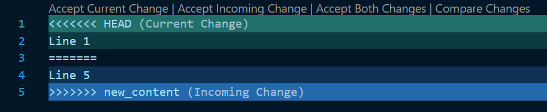

Merge Strategies
When you execute cicdgen in a project, is possible that you already have some files that cicdgen will generate. Until version 1.5 the behaviour in these cases was to throw an error and not create/modify any file. Since version 1.6 you can choose what to do in case of conflict. In this page we will explain who to choose one merge strategy and how it works.
Choose a merge strategy
To choose a merge strategy, you must pass to cicdgen the merge parameter followed by the name of the strategy. The strategies available are: error, keep, override, combine.
Example:
$ cicdgen generate devon4j --merge keep
Merge strategies
-
error: The error strategy is the same as until version 1.5, throwing an error and do not create/modify any file. This is the default value, if you do not pass the merge parameter this value will be taken.
-
keep: The keep strategy will keep the actual content of your files in case of conflict. If there is no conflict, the file will be created with the new content.
-
override: The override strategy will override your current files, without throwing any error, and create a new ones with the new content. If there is no conflict, the file will be created with the new content.
-
combine: The combine strategy will create a new file combining the current content with the new content. In order to combine both files, it will apply a diff algorithm and it will show the conflicts in the same way that git does. If there is no conflict, the file will be created with the new content.
By resolving the conflicts in the same way as git, you can use the same tools in order to solve them. For example, you can use VSCode:

Examples:
keep Current file:
Line 1 Line 2 Line 3 Line 4
New file:
Line 5 Line 2 Line 3 Line 4
The result will be:
Line 1 Line 2 Line 3 Line 4
override Current file:
Line 1 Line 2 Line 3 Line 4
New file:
Line 5 Line 2 Line 3 Line 4
The result will be:
Line 5 Line 2 Line 3 Line 4
combine Current file:
Line 1 Line 2 Line 3 Line 4
New file:
Line 5 Line 2 Line 3 Line 4
The result will be:
<<<<<<< HEAD Line 1 ======= Line 5 >>>>>>> new_content Line 2 Line 3 Line 4